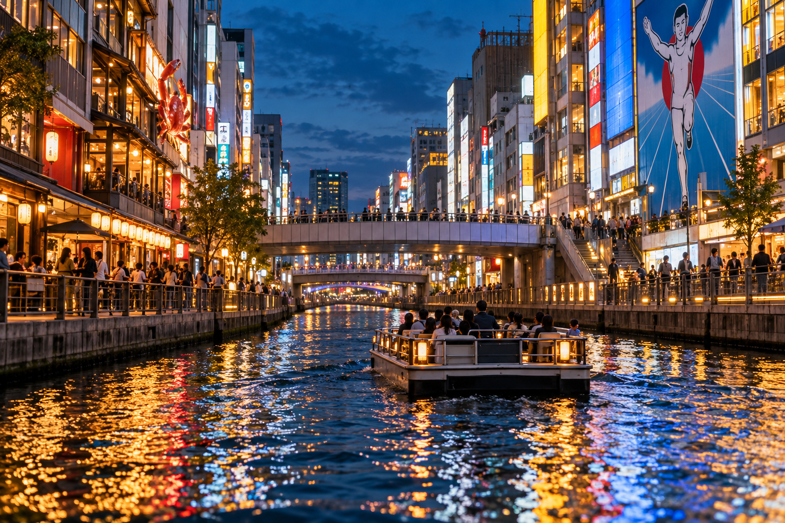
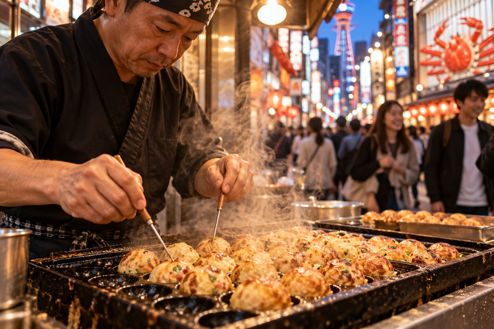
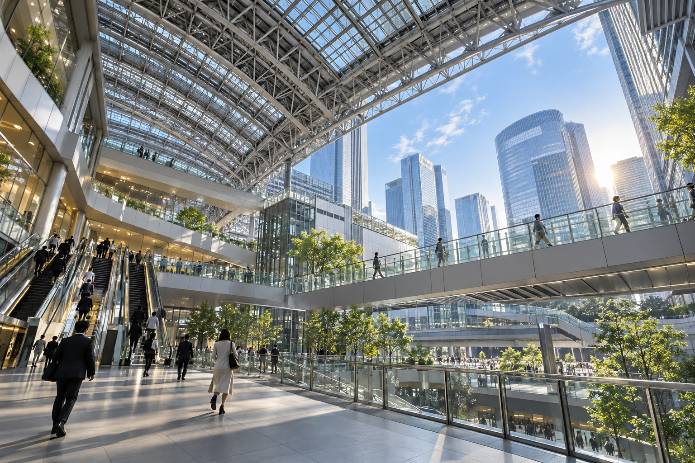

Osaka Travel Guide for First-Time Visitors
Osaka feels different from both Tokyo and Kyoto. Tokyo is larger and more complex, while Kyoto is built around historic districts, temples, and slower sightseeing. Osaka is easier to approach through food, neighborhoods, nightlife, shopping, history, and a more casual city atmosphere. For many first-time visitors, it becomes the place where evenings remain part of the sightseeing instead of simply marking the end of the day.
The biggest Osaka planning mistake is treating the city as nothing more than Dotonbori or as a quick evening stop after Kyoto. Dotonbori is important, but Osaka also has major transport districts, historic sites, retro neighborhoods, markets, observation decks, museums, and a large bay entertainment area. The city works best when you group these places geographically rather than crossing Osaka repeatedly.
This guide explains how many days first-time visitors need, the main Osaka areas, which experiences deserve priority, how Osaka fits with Kyoto and Tokyo, and how to avoid building a rushed trip. Exact day-by-day routes will stay in the separate Osaka 2-Day Itinerary and Osaka 3-Day Itinerary.
Osaka for First-Time Visitors at a Glance

| Planning Question | Good Starting Point |
|---|---|
| Recommended first stay | 2–3 full days |
| Best-known area | Dotonbori / Namba |
| Best for food and nightlife | Minami |
| Best transport hub | Umeda / Osaka Station |
| Main historic sight | Osaka Castle |
| Best retro district | Shinsekai |
| Best modern skyline area | Umeda |
| Best for shopping | Shinsaibashi / Namba / Umeda |
| Best family entertainment zone | Bay Area |
| Main evening strength | Food, shopping and nightlife |
| Biggest planning mistake | Spending only one evening in Osaka |
| Best planning method | Group sightseeing by area |
Osaka's official tourism guide divides the city into distinct zones such as Kita, Minami, Osaka Castle, Tennoji/Abeno, and the Bay Area, which is a useful way to structure a first visit.
Is Osaka Worth Visiting on a First Trip to Japan?
Yes.
For many first-time Japan trips, Osaka adds experiences that Tokyo and Kyoto do not provide in the same way.
Osaka is particularly strong for:
- ✓Food
- ✓Nightlife
- ✓Shopping
- ✓Casual urban atmosphere
- ✓Retro neighborhoods
- ✓Modern city views
- ✓Entertainment
- ✓Easy evenings
- ✓Regional transport
It also works extremely well as part of the classic:
Tokyo → Kyoto → Osaka
route.
If you are unsure how to divide your nights between those cities, see Tokyo, Kyoto and Osaka Itinerary: How to Divide Your Days.
Osaka Is Not Just a Smaller Tokyo
This is an important planning point.
Both cities offer:
- ✓Large railway networks
- ✓Shopping
- ✓Food
- ✓Skyscrapers
- ✓Nightlife
But the experience is different.
Osaka feels more concentrated around a smaller number of major visitor districts.
That makes it easier to build a short first-time itinerary.
You can move between:
- ✓Umeda
- ✓Osaka Castle
- ✓Namba
- ✓Shinsaibashi
- ✓Tennoji
without needing to understand a city on Tokyo's scale.
Osaka Is Not Just a Base for Kyoto Either
Some travelers stay in Osaka and visit Kyoto as a day trip.
That can work.
But Osaka deserves its own sightseeing time.
If you spend every day leaving for:
- ✓Kyoto
- ✓Nara
- ✓Kobe
then return only to sleep, you miss much of what makes Osaka worth including.
Give the city at least one full day.
Two or three days is better for a first visit.
How Many Days Do You Need in Osaka?
For most first-time visitors:
2–3 full days
is a strong starting point.
The right number depends heavily on whether you include:
- ✓Universal Studios Japan
- ✓Osaka Aquarium
- ✓Day trips
- ✓Shopping
- ✓Nightlife
One Day in Osaka
One full day can show you the city's most recognizable side.
You could experience:
- ✓Osaka Castle area
- ✓Namba
- ✓Dotonbori
- ✓Shinsaibashi
But this is a highlights visit.
You will miss much of:
- ✓Umeda
- ✓Shinsekai
- ✓Tennoji
- ✓Bay Area
- ✓Slower food exploration
If Osaka is simply one short stop inside a long Japan trip, one day can work.
I would not call it the ideal first visit.
Two Days in Osaka
Two days gives you a much better balance.
You can separate:
- ✓Historic/modern Osaka
- ✓Minami/southern Osaka
instead of forcing everything into one long day.
A two-day visit can comfortably include a selection of:
- ✓Osaka Castle
- ✓Umeda
- ✓Namba
- ✓Dotonbori
- ✓Shinsaibashi
- ✓Shinsekai
- ✓Tennoji
The exact route will belong in Osaka 2-Day Itinerary.
Three Days in Osaka
Three days is excellent if Osaka is one of your main Japan destinations.
The extra day gives you room for:
- ✓Slower neighborhoods
- ✓More food exploration
- ✓Museums
- ✓Longer shopping
- ✓Bay Area
- ✓A major attraction such as Universal Studios Japan
Our future Osaka 3-Day Itinerary should use the third day to create a genuinely different trip rather than simply adding more stops to a two-day route.
Does Universal Studios Japan Need Its Own Day?
Yes.
If Universal Studios Japan is a priority, treat it as a full-day experience.
Do not plan:
USJ → Osaka Castle → Dotonbori → Shinsekai
as one normal sightseeing day.
A theme-park day involves:
- ✓Travel
- ✓Entry
- ✓Queues
- ✓Attractions
- ✓Food
- ✓Walking
It can also continue well into the evening.
If you have:
3 days in Osaka including USJ
then think of that as:
2 Osaka city sightseeing days + 1 USJ day
rather than three full city days.
Osaka or Kyoto: Which Needs More Days?
For a first cultural Japan trip, I would generally give Kyoto more sightseeing time than Osaka.
Kyoto's major areas are spread out and cultural sightseeing tends to move more slowly.
Osaka can be experienced efficiently in two or three days.
That does not mean Kyoto is better.
The cities solve different travel needs.
Kyoto Is Stronger For:
- ✓Temples
- ✓Shrines
- ✓Traditional streets
- ✓Gardens
- ✓Historic architecture
Osaka Is Stronger For:
- ✓Food
- ✓Nightlife
- ✓Entertainment
- ✓Shopping
- ✓Urban energy
- ✓Casual evenings
A good Kansai itinerary uses both rather than expecting one to replace the other.
How Osaka Is Organized?
For first-time planning, think of Osaka as several major sightseeing zones.
The most useful are:
- ✓Minami
- ✓Kita / Umeda
- ✓Osaka Castle Area
- ✓Tennoji / Abeno
- ✓Bay Area
You do not need to memorize every Osaka neighborhood before arriving.
Understand these main zones first.
Minami: Best for the Classic First-Time Osaka Experience

For most tourists, Minami is the Osaka they recognize first.
The broad southern-central district includes major areas such as:
- ✓Namba
- ✓Dotonbori
- ✓Shinsaibashi
- ✓Nipponbashi
- ✓Kuromon Market
- ✓Amerikamura
This is the strongest zone for:
- ✓Food
- ✓Shopping
- ✓Nightlife
- ✓Neon
- ✓Street atmosphere
If you have only one evening in Osaka, Minami is where I would spend it.
Dotonbori
Dotonbori is Osaka's most recognizable entertainment area.
It is known for:
- ✓Giant signs
- ✓Neon
- ✓Restaurants
- ✓Canal
- ✓Glico sign
- ✓Food
- ✓Evening crowds
Osaka's official tourism site describes it as the symbolic shopping and entertainment district of Minami, with restaurants lining the area and the canal-side riverwalk forming part of the experience.
When Should You Visit Dotonbori?
You can visit during the day.
But I strongly prefer it:
late afternoon into evening
because the district changes as the lights come on.
This is one place where the evening atmosphere is part of the attraction.
Do Not Treat Dotonbori as a 15-Minute Photo Stop
Yes, take the classic canal and Glico photos.
But also:
- ✓Walk the side streets
- ✓Explore food options
- ✓Cross toward Shinsaibashi
- ✓Walk along the river
- ✓Look beyond one bridge
Dotonbori is better as part of a wider Minami evening.
Namba
Namba is one of Osaka's most important transport and entertainment areas.
Several railway and subway services use stations carrying the Namba name.
This makes the district useful for both:
- ✓Sightseeing
- ✓Accommodation
Namba connects naturally with:
- ✓Dotonbori
- ✓Shinsaibashi
- ✓Kuromon Market
- ✓Nipponbashi
That makes the broader Namba/Minami zone one of the easiest areas to explore mainly on foot once you arrive.
Shinsaibashi
Shinsaibashi is one of Osaka's major shopping districts.
The area includes:
- ✓Shopping streets
- ✓Department stores
- ✓Fashion
- ✓Restaurants
- ✓Cafes
It connects naturally with Dotonbori.
You do not need a train between the two.
This makes:
Shinsaibashi → Dotonbori
one of the easiest first-time evening combinations in Osaka.
Amerikamura
Near Shinsaibashi, Amerikamura provides a different atmosphere.
It is associated with:
- ✓Youth culture
- ✓Fashion
- ✓Street style
- ✓Music
- ✓Cafes
You do not need to spend half a day here.
It can work as an optional detour when exploring the Shinsaibashi side.
Who Will Enjoy Amerikamura Most?
Travelers interested in:
- ✓Fashion
- ✓Youth culture
- ✓Street photography
- ✓Independent shops
will get more from it than travelers focused mainly on historic Japan.
Kuromon Ichiba Market
Kuromon Ichiba Market is one of Osaka's well-known food markets.
It can be useful for:
- ✓Seafood
- ✓Produce
- ✓Snacks
- ✓Prepared food
- ✓Market atmosphere
But I would not treat it as the only place to experience Osaka food.
Osaka's food culture is spread across the city.
Use Kuromon as one part of that experience.
When Should You Visit?
Go during the day.
Do not save it as a late-night activity.
Individual businesses keep their own hours.
Nipponbashi and Den Den Town
Travelers interested in:
- ✓Anime
- ✓Manga
- ✓Games
- ✓Electronics
- ✓Collectibles
should know about Nipponbashi, including the area commonly called Den Den Town.
It provides another side of Minami beyond food and nightlife.
It can fit naturally with:
- ✓Kuromon
- ✓Namba
- ✓Shinsekai
depending on your route.
Why Minami Deserves More Than One Hour
The area combines several interests:
food + shopping + nightlife + pop culture + city atmosphere
You can visit only Dotonbori and still say you saw it.
But a better first visit gives Minami a full:
afternoon + evening
or another substantial block of time.
Kita and Umeda: Best for Modern Osaka and Transport

If Minami represents Osaka's famous nightlife and food image, Kita shows you the city's modern business and transport side.
The main hub is:
Umeda / Osaka Station
This is one of western Japan's most important urban transport areas.
Osaka's official tourism guide describes Kita as the city's gateway, with major shopping centers, department stores, offices, and quick access toward the Nakanoshima waterfront.
Osaka Station vs Shin-Osaka Station
First-time visitors often confuse these.
They are not the same station.
Shin-Osaka
Primarily important for:
- ✓Shinkansen
- ✓Long-distance rail
Osaka Station / Umeda
Important for:
- ✓Central Osaka
- ✓Shopping
- ✓Hotels
- ✓Local and regional transport
- ✓Sightseeing
If you arrive from Tokyo or Kyoto by Shinkansen, you may first reach Shin-Osaka and then continue into the city.
Do not assume your accommodation is beside the sightseeing areas simply because it says “Osaka” somewhere in the station name.
Umeda
Umeda is a dense modern district filled with:
- ✓Shopping
- ✓Department stores
- ✓Restaurants
- ✓Hotels
- ✓Office towers
- ✓Transport
It can feel overwhelming at first because several railway operators and connected buildings occupy the same broad zone.
Take your time learning the station.
Umeda Is Excellent in Bad Weather
This is one of the area's advantages.
Large parts of Umeda connect through:
- ✓Stations
- ✓Shopping centers
- ✓Underground passages
- ✓Department stores
If rain disrupts an outdoor Osaka day, Umeda can provide plenty to do.
Umeda Sky Building
One of the best-known viewpoints in the Kita area is the Umeda Sky Building.
Its observatory sits roughly 173 meters above ground and provides wide views across Osaka.
You do not need to visit every observation deck in Osaka.
Choose one based on:
- ✓Location
- ✓Weather
- ✓Time of day
- ✓Your itinerary
Best Time for an Observation Deck
Late afternoon can work especially well.
You may experience:
- ✓Daylight
- ✓Sunset
- ✓Night city lights
within one visit.
But this depends on:
- ✓Season
- ✓Weather
- ✓Sunset time
Do not build a fixed schedule around a sunset if clouds make the view poor.
Nakanoshima
Near Kita, Nakanoshima provides a calmer contrast to the dense Umeda core.
The area includes:
- ✓Waterfront
- ✓Historic architecture
- ✓Cultural buildings
- ✓Riverside walking
It can work well for travelers who enjoy:
- ✓Architecture
- ✓Walking
- ✓Slower urban spaces
You do not need to make it a first-time priority if your Osaka stay is very short.
Should First-Time Visitors Prioritize Umeda?
Yes, particularly if:
- ✓Modern city views interest you
- ✓Shopping matters
- ✓Your hotel is nearby
- ✓You want an observation deck
- ✓You use Osaka Station for regional travel
But if you only have one single day and food/nightlife are your priorities, Minami may feel more distinctively Osaka.
Osaka Castle Area: Best for History
Osaka Castle is the city's most recognizable historic landmark.
The surrounding park creates a different experience from both Umeda and Dotonbori.
This area is useful for travelers who want some historical context inside an otherwise modern-city itinerary.
Osaka Castle Is More Than One Building
The broader area includes:
- ✓Castle tower
- ✓Stone walls
- ✓Moats
- ✓Gates
- ✓Large park
- ✓Seasonal scenery
Do not calculate your visit using only the time needed to walk through the museum inside the main tower.
The grounds themselves take time.
How Long Should You Give Osaka Castle?
For a first visit, a reasonable starting point is:
2–3 hours for the wider castle area
depending on:
- ✓Museum interest
- ✓Crowds
- ✓Photography
- ✓Season
- ✓Walking pace
A traveler who only wants exterior views can spend less.
Is the Current Castle Tower Original?
The present castle tower is a reconstruction rather than the untouched original medieval structure.
That does not make the site unimportant.
The castle grounds and history remain central to Osaka's story.
Approach it as:
historic site + museum + city landmark
rather than expecting an entirely original interior.
Osaka Castle in Cherry Blossom Season
The wider park becomes especially popular during cherry blossom season.
This can make it:
- ✓Beautiful
- ✓Busy
at the same time.
If your visit falls during peak seasonal conditions, allow more time.
Do not assume you can walk quickly through an empty park.
Should You See Osaka Castle if You Already Visit Himeji?
This is a good question.
If your wider Japan trip includes Himeji Castle, you will see one of Japan's great original surviving castles.
Osaka Castle then becomes less essential purely as a castle-architecture experience.
But it can still be worthwhile for:
- ✓Osaka history
- ✓City views
- ✓Grounds
- ✓Photography
If your time is limited, personal interest should decide.
Tennoji and Abeno: Modern Views Meet Older Osaka
South of the main Minami districts, Tennoji and Abeno combine:
- ✓Major transport
- ✓Parks
- ✓Temples
- ✓Shopping
- ✓Skyscrapers
- ✓Access toward Shinsekai
Osaka's official tourism guide describes the area as a mixture of modern high-rise Osaka and older nostalgic streets.
This makes it useful for a first trip because several different experiences sit relatively close together.
Shinsekai
Shinsekai is one of Osaka's best-known retro districts.
The area developed around:
Tsutenkaku Tower
and is associated with:
- ✓Bright signs
- ✓Casual restaurants
- ✓Kushikatsu
- ✓Older downtown atmosphere
It feels very different from polished Umeda.
When Should You Visit Shinsekai?
Late afternoon or evening works well.
The lights and restaurant atmosphere make it more interesting than a rushed morning pass.
However, there is no rule that you must stay late.
What Should You Eat?
Shinsekai is closely associated with:
kushikatsu
deep-fried skewers of:
- ✓Meat
- ✓Vegetables
- ✓Seafood
- ✓Other ingredients
Food will be covered more deeply later in this guide.
For now, the planning point is simple:
Do not eat a huge dinner elsewhere immediately before visiting Shinsekai if trying local food is one of your priorities.
Tsutenkaku
Tsutenkaku is one of the district's defining landmarks.
You can:
- ✓View it from the streets
- ✓Visit the tower
- ✓Use it as part of a wider Shinsekai walk
You do not need to go up every Osaka observation tower.
If you already plan:
- ✓Umeda Sky Building
- ✓Abeno Harukas
you may simply enjoy Tsutenkaku from street level.
Abeno
The wider Abeno/Tennoji area is more modern than Shinsekai.
This contrast is useful.
You can move between:
retro Osaka → modern high-rise Osaka
without traveling across the entire city.
That makes the area useful in a two- or three-day itinerary.
Bay Area: Best for Major Entertainment Attractions
Osaka's Bay Area has a very different purpose from central Osaka.
This is where you will find major entertainment attractions including:
- ✓Universal Studios Japan
- ✓Osaka Aquarium Kaiyukan
- ✓Waterfront entertainment
For many families, this part of Osaka can take an entire day.
Do You Need the Bay Area on a First Visit?
Not necessarily.
If you have two days and your interests are:
- ✓Food
- ✓History
- ✓City neighborhoods
you can skip it.
If you have children or major interest in:
- ✓Theme parks
- ✓Aquariums
- ✓Entertainment
the Bay Area becomes much more important.
Universal Studios Japan
If USJ is a major reason for visiting Osaka, plan around it early.
Do not treat it as an optional two-hour stop.
A park visit can affect:
- ✓Hotel choice
- ✓Number of Osaka nights
- ✓Ticket planning
- ✓Morning schedule
Keep it separate from normal city sightseeing.
Osaka Aquarium Kaiyukan
The aquarium is another major Bay Area attraction.
It can be especially appealing for:
- ✓Families
- ✓Marine-life interests
- ✓Rainy days
Again, it should be treated as a meaningful attraction rather than added to an already full day merely because you are in Osaka.
The Main Rule for Planning Osaka
Do not build your itinerary from a list like:
Osaka Castle → Arashiyama → Dotonbori → USJ → Shinsekai
That mixes:
- ✓Osaka
- ✓Kyoto
- ✓Theme parks
- ✓Several distant districts
into one unrealistic plan.
Instead, think:
area → experience → nearby area
Osaka becomes much easier once you stop chasing individual landmarks and start grouping the city geographically.
How to Get Around Osaka
Osaka is easier to navigate than its railway map first suggests.
For most first-time visitors, the main transport options are:
- ✓Osaka Metro
- ✓JR trains
- ✓Private railways
- ✓Buses
- ✓Walking
- ✓Occasional taxis
The city is broadly organized around two major urban hubs:
Kita around Umeda
and:
Minami around Namba
Osaka's official tourism guidance describes the subway as one of the easiest ways to move between these major parts of the city, while the JR Osaka Loop Line is also useful for connecting with several districts and railway networks.
Osaka Metro
For normal city sightseeing, Osaka Metro will probably be one of your most useful transport systems.
The network reaches many first-time areas, including stations close to:
- ✓Namba
- ✓Shinsaibashi
- ✓Umeda
- ✓Tennoji
- ✓Nipponbashi
- ✓Osaka Castle area
- ✓Shinsekai
- ✓Bay Area connections
You do not need to memorize the full network.
Use your route app for each journey.
The Midosuji Line Is Especially Useful
First-time visitors will often encounter the Midosuji Line.
It connects major areas including:
- ✓Shin-Osaka
- ✓Umeda
- ✓Shinsaibashi
- ✓Namba
- ✓Tennoji
That makes it one of the most useful north-south routes in Osaka.
If your hotel sits close to this line, many common visitor journeys become simpler.
Osaka Metro Station Numbers
Like Tokyo, Osaka's subway system uses:
- ✓Line names
- ✓Colors
- ✓Station codes
These can help when Japanese place names are unfamiliar.
Follow:
line + station + direction
rather than relying only on color.
JR Trains in Osaka
JR is also useful, especially for:
- ✓Osaka Station
- ✓Shin-Osaka
- ✓Tennoji
- ✓Osaka Castle area
- ✓Universal City
- ✓Regional travel
The Osaka Loop Line circles part of the central city and can be useful for moving between several districts.
However, do not assume JR is always the best route.
Sometimes the subway is much more direct.
JR vs Osaka Metro
Use whichever route is simpler.
JR Can Be Better For:
- ✓Osaka Station
- ✓Shin-Osaka
- ✓Universal Studios Japan
- ✓Certain Loop Line destinations
- ✓Regional connections
Osaka Metro Can Be Better For:
- ✓Namba
- ✓Shinsaibashi
- ✓Dotonbori
- ✓Many central city journeys
A compatible IC card makes switching between systems much easier.
Private Railways Matter in Osaka
Osaka is a major regional transport hub.
You may use private railway companies such as:
- ✓Hankyu
- ✓Hanshin
- ✓Nankai
- ✓Kintetsu
- ✓Keihan
These become especially important for travel toward:
- ✓Kyoto
- ✓Kobe
- ✓Nara
- ✓Kansai Airport
- ✓Other Kansai destinations
You do not need to study every operator before arrival.
Your route app will tell you which one fits the journey.
Can You Use Suica, PASMO or ICOCA in Osaka?
Yes, compatible nationwide IC cards are extremely useful.
If you already have:
- ✓Suica
- ✓PASMO
- ✓ICOCA
from another part of Japan, you usually do not need to buy a new card simply because you arrived in Osaka.
Use it for compatible local transport and let the system calculate normal fares.
For the full card comparison, mobile-card options, recharging, tourist versions, and refunds, see IC Cards in Japan: Suica, PASMO and ICOCA Explained.
Do You Need an ICOCA Specifically?
No.
ICOCA is strongly associated with western Japan, but you do not need to replace a working Suica or PASMO merely because you entered the Kansai region.
One compatible card is normally enough for everyday transport.
Should You Buy an Osaka Day Pass?
Maybe.
Osaka Metro offers one-day transport products that can provide unlimited rides on eligible Metro and city-bus services.
Whether one saves money depends on:
- ✓Number of rides
- ✓Day of travel
- ✓Operators used
- ✓Whether you walk
- ✓Whether JR or private railways appear in your route
Do not buy a pass automatically.
Pass vs IC Card
Use a pass when:
- ✓You expect many eligible rides
- ✓Your attractions sit along the covered network
- ✓The savings are clear
Use an IC card when:
- ✓Your day mixes operators
- ✓You walk between nearby areas
- ✓You value flexibility
- ✓You make only a few journeys
The same rule used elsewhere in Japan applies:
Build the itinerary first. Choose the ticket second.
Walking in Osaka
Osaka is very walkable within individual districts.
Some of the best combinations require little or no public transport.
Examples include:
Shinsaibashi → Dotonbori → Namba
and:
Tennoji → Shinsekai
depending on your exact route.
This is why geographical planning matters.
Take the train to the district, then explore on foot.
Do Not Take a Train for Every Short Distance
Before entering a station, compare the walking time.
A:
12-minute walk
may be easier than:
station entrance → ticket gate → train → exit → another walk
especially when the two areas are already connected by interesting streets.
Taxis in Osaka
Taxis are useful but not necessary for most sightseeing.
Consider one when:
- ✓You have large luggage
- ✓It is raining heavily
- ✓Several people can share the fare
- ✓You return late
- ✓Public transport requires awkward transfers
- ✓Someone has limited mobility
For normal daytime sightseeing, Metro and rail will usually be much cheaper.
Osaka Station, Umeda and Shin-Osaka: Understand the Difference
This confuses many first-time visitors.
Osaka Station
A major JR hub in central Umeda.
Umeda
The wider commercial and transport district surrounding Osaka Station and several private railway/subway stations.
Shin-Osaka
The city's main Shinkansen station, north of central Osaka.
If you arrive from Tokyo by bullet train, you will normally arrive at:
Shin-Osaka
not Dotonbori or Osaka Station.
From there, continue into the city.
For a deeper explanation of bullet-train booking, seats, luggage, and boarding, see Shinkansen Guide: How to Use Japan's Bullet Trains.
Where Should First-Time Visitors Stay in Osaka?
The detailed neighborhood decision will belong in Where to Stay in Osaka: Best Areas for First-Time Visitors.
At pillar level, most first-time visitors should compare:
- ✓Namba
- ✓Umeda
- ✓Shinsaibashi
- ✓Tennoji
The best area depends on whether you prioritize:
- ✓Food
- ✓Nightlife
- ✓Transport
- ✓Airport access
- ✓Shopping
- ✓Regional day trips
Namba: Best Broad Choice for Food and First-Time Atmosphere
Namba is particularly strong if you want to stay close to:
- ✓Dotonbori
- ✓Shinsaibashi
- ✓Kuromon
- ✓Restaurants
- ✓Nightlife
- ✓Shopping
It also has useful Nankai access toward Kansai International Airport.
For travelers who want Osaka to feel active immediately outside the hotel, Namba is hard to beat.
Umeda: Best for Transport and Regional Travel
Umeda works especially well if:
- ✓You value transport
- ✓Kyoto day trips matter
- ✓You want large shopping centers
- ✓You prefer a more polished modern area
- ✓You use JR frequently
It is also practical for travelers continuing around the Kansai region.
Shinsaibashi: Best for Shopping and Central Minami Access
Shinsaibashi places you close to:
- ✓Dotonbori
- ✓Amerikamura
- ✓Shopping
- ✓Restaurants
It can provide a slightly different atmosphere from staying directly beside Namba Station while retaining excellent access to Minami.
Tennoji: Best for Value and Southern Osaka Access
Tennoji can be a practical alternative if you want:
- ✓Major transport
- ✓Shinsekai access
- ✓Abeno
- ✓Southern Osaka
- ✓Potentially better hotel value
It is also useful for some airport and regional routes.
Should You Stay Near Shin-Osaka?
For most first-time visitors:
not unless the logistics strongly justify it.
Shin-Osaka is excellent for Shinkansen travel.
But it is less useful for evening sightseeing than:
- ✓Namba
- ✓Umeda
- ✓Shinsaibashi
Stay near Shin-Osaka if:
- ✓You have a very early bullet train
- ✓You arrive extremely late
- ✓Rail logistics dominate the trip
Otherwise, staying in a more interesting central district usually gives you a better Osaka experience.
Getting From Kansai International Airport to Osaka
Kansai International Airport, usually called KIX, sits outside central Osaka.
Your best airport route depends heavily on where you stay.
KIX to Namba
For Namba, Nankai Railway is one of the most convenient choices.
Services run between Kansai Airport Station and Nankai Namba.
The limited-express Rapi:t is one of the well-known airport options.
This makes Namba particularly attractive for travelers flying in or out through KIX.
KIX to Umeda / Osaka Station
JR services and airport buses can be more practical when your hotel is around:
- ✓Osaka Station
- ✓Umeda
Choose based on:
- ✓Hotel location
- ✓Arrival time
- ✓Luggage
- ✓Number of transfers
KIX to Tennoji
JR services make Tennoji another useful airport-connected area.
Again, this can strengthen Tennoji as a hotel option.
KIX to Shin-Osaka
If you need Shin-Osaka, JR is generally the most natural starting option.
But if you have just landed and your hotel is elsewhere, go to your actual hotel instead of traveling to Shin-Osaka merely because it is the Shinkansen station.
Airport Transfer Rule
Do not ask:
“What is the fastest train from KIX?”
Ask:
“What is the simplest route from KIX to my hotel?”
A route that saves five minutes but adds:
- ✓Two transfers
- ✓Stairs
- ✓Long walks
may be worse with luggage.
What About Osaka Itami Airport?
Osaka International Airport, usually called Itami Airport, mainly handles domestic flights.
Depending on your Japan itinerary, you may use it for domestic travel.
Do not confuse:
Itami
with:
Kansai International Airport
They are different airports with different transport routes.
Osaka as a Base for Kansai
One of Osaka's biggest strengths is regional transport.
You can use it as a base for destinations including:
- ✓Kyoto
- ✓Nara
- ✓Kobe
- ✓Himeji
But this does not mean you should automatically sleep in Osaka for your entire Kansai stay.
The right base depends on what you want to experience early and late in the day.
Osaka to Kyoto
Osaka and Kyoto have several railway options.
Depending on your starting and ending districts, you may use:
- ✓JR
- ✓Hankyu
- ✓Keihan
This is important because:
Osaka Station → Kyoto Station
is not the only useful city-to-city route.
For example, a traveler staying near Namba may make a different transport decision from someone staying in Umeda.
Should You Stay in Osaka and Visit Kyoto Every Day?
You can.
I would not recommend it if you want two or three full Kyoto sightseeing days.
Staying in Kyoto gives you:
- ✓Easier early mornings
- ✓Kyoto evenings
- ✓Less repeated commuting
A better multi-city first trip is often:
stay in Kyoto for Kyoto → move to Osaka for Osaka
rather than choosing one city solely to avoid changing hotels.
Osaka to Nara
Osaka is an excellent starting point for Nara.
Both JR and Kintetsu routes can be useful depending on where you stay.
If Nara is a major part of your Kansai plan, staying around:
- ✓Namba
- ✓Tennoji
can be especially practical.
But Nara deserves meaningful time.
Do not add it to the middle of a full Osaka sightseeing day.
Osaka to Kobe
Kobe is also easy to reach from Osaka using regional rail.
This makes Osaka a strong base if you have several nights and want one regional excursion.
Again, protect enough Osaka time first.
Osaka to Himeji
Himeji can be reached from Osaka by rail and is an attractive option for travelers interested in castles and history.
If you plan Himeji, it may affect how much time you want to spend inside Osaka Castle.
That does not make Osaka Castle pointless, but it gives you another choice when time is limited.
How Osaka Fits Into a Wider Japan Transport Plan
If your route includes:
Tokyo → Kyoto → Osaka
the journey is straightforward by rail.
If you are still deciding how to connect the major cities, How to Get Around Japan: Transportation Guide covers the wider decision between trains, flights, buses, cars, and other transport.
For a classic first-time route, rail usually makes the city sequence relatively simple.
Osaka Food: One of the Main Reasons to Visit
Food should not be treated as something squeezed between attractions in Osaka.
It is part of the sightseeing.
The city is especially associated with casual, flavorful dishes that work well during a busy urban trip.
Major foods to know include:
- ✓Takoyaki
- ✓Okonomiyaki
- ✓Kushikatsu
- ✓Udon
- ✓Sushi
- ✓Yakiniku
- ✓Street snacks
You do not need to try all of them.
Choose according to your interests.
Takoyaki
Takoyaki are round batter-based snacks containing octopus.
You will see them across Osaka, especially around busy entertainment districts.
They are often:
- ✓Very hot inside
- ✓Topped with sauce
- ✓Finished with other toppings
Do not bite into a fresh takoyaki immediately without checking the temperature.
Okonomiyaki
Okonomiyaki is another classic Osaka dish.
It is a savory pancake-style dish made with batter and ingredients that vary by restaurant.
For many first-time visitors, this is worth having as a proper meal rather than treating it as a small street snack.
Kushikatsu
Kushikatsu is closely associated with Shinsekai.
It consists of deep-fried skewers using ingredients such as:
- ✓Meat
- ✓Seafood
- ✓Vegetables
If Shinsekai is on your itinerary, trying kushikatsu there can make geographical sense.
You do not need to cross Osaka simply to eat it at one famous restaurant.
Kuidaore: Eating Until You Drop?
Osaka is often associated with the expression kuidaore, commonly understood as spending freely or indulging heavily in food.
You do not need to turn this into a challenge.
The useful planning lesson is simpler:
leave room in the itinerary for food.
Do not schedule lunch as a 20-minute gap between attractions.
Where Should You Eat in Osaka?
There is no single “best food district.”
Strong starting areas include:
Dotonbori / Namba
Best for:
- ✓Famous Osaka atmosphere
- ✓Huge choice
- ✓Casual food
- ✓Late evenings
Shinsekai
Best for:
- ✓Kushikatsu
- ✓Retro dining atmosphere
Umeda
Best for:
- ✓Department-store restaurants
- ✓Large restaurant complexes
- ✓Variety
- ✓Bad-weather dining
Kuromon
Best for:
- ✓Daytime market experience
- ✓Seafood
- ✓Snacks
Neighborhood Restaurants
Do not ignore restaurants one or two streets away from the largest tourist crowds.
A great meal does not require the biggest queue.
Do You Need Restaurant Reservations?
Not for every meal.
You can eat very well in Osaka spontaneously.
Reserve when:
- ✓A specific restaurant matters
- ✓Fine dining is planned
- ✓You are traveling with a larger group
- ✓It is a holiday or busy weekend
- ✓The restaurant has very limited seating
Keep other meals flexible.
Avoid Building the Trip Around Viral Food Queues
If one food stall has a 60-minute queue and ten alternatives nearby look good, ask whether the queue is really worth an hour of your limited Osaka time.
Popularity does not automatically mean:
best use of your trip.
Nightlife in Osaka
Osaka is one of the strongest nightlife stops on a first Japan trip.
You do not need to visit clubs or bars to benefit from that.
The city's evening strengths include:
- ✓Illuminated streets
- ✓Restaurants
- ✓Shopping
- ✓River walks
- ✓Izakaya
- ✓Bars
- ✓Late activity
For many travelers, evening is when Osaka feels most distinctive.
Best Areas at Night
Dotonbori / Namba
Best first-time atmosphere.
Shinsaibashi
Shopping, restaurants, and easy connection with Dotonbori.
Umeda
Modern skyline, restaurants, and large commercial complexes.
Shinsekai
Retro signs and casual food.
You do not need all four in one evening.
Osaka With Children
Osaka can be excellent for families.
Strong family interests may include:
- ✓Universal Studios Japan
- ✓Aquarium
- ✓Osaka Castle grounds
- ✓Shopping centers
- ✓Observation decks
- ✓Food
Transport is also relatively easy compared with more bus-dependent destinations.
Family Pacing
Do not build every day around:
morning attraction → afternoon attraction → nighttime Dotonbori until late
Children may enjoy Osaka more with:
- ✓Earlier dinner
- ✓Fewer districts
- ✓Indoor breaks
- ✓One major attraction per block
Osaka for Couples
Osaka works especially well for couples who enjoy:
- ✓Food
- ✓Night walks
- ✓Shopping
- ✓Skyline views
- ✓Casual city exploration
A good couple's evening could be as simple as:
Shinsaibashi → Dotonbori → dinner → canal walk
without another major attraction.
Osaka for Solo Travelers
Osaka is straightforward for solo travel.
Advantages include:
- ✓Compact food options
- ✓Efficient Metro
- ✓Business hotels
- ✓Casual restaurants
- ✓Active evenings
Solo travelers can also adjust the itinerary easily around food queues and nightlife.
Cash and Cards in Osaka
Cards and cashless payments are common across modern Osaka.
You can use them at many:
- ✓Hotels
- ✓Department stores
- ✓Convenience stores
- ✓Restaurants
- ✓Major attractions
Still carry some yen.
Smaller:
- ✓Restaurants
- ✓Food stalls
- ✓Shops
may have different payment rules.
A backup payment method is sensible.
Convenience Stores
Convenience stores are useful for:
- ✓Breakfast
- ✓Snacks
- ✓Drinks
- ✓ATMs
- ✓Basic supplies
They are especially useful before an early day trip.
But Osaka is one of Japan's strongest food cities.
Do not let convenience-store meals replace every local meal.
Is Osaka Safe for First-Time Visitors?
Osaka is generally straightforward for visitors.
Use normal city awareness, particularly around:
- ✓Nightlife districts
- ✓Crowded stations
- ✓Bars
- ✓Late-night entertainment streets
Keep track of:
- ✓Phone
- ✓Wallet
- ✓Bags
and avoid following aggressive touts into businesses you did not intend to visit.
Late-Night Transport
Like other Japanese cities, normal rail services do not run all night.
If you stay out late:
- ✓Check your final train
- ✓Know your hotel distance
- ✓Keep taxi as a backup
This matters especially if you stay in Umeda but spend the night in Namba, or vice versa.
Language in Osaka
First-time visitors can travel around Osaka without speaking Japanese.
Major:
- ✓Stations
- ✓Hotels
- ✓Attractions
- ✓Transport systems
provide useful English signage.
A translation app can help at:
- ✓Smaller restaurants
- ✓Local shops
- ✓Menus
Keep your hotel name and address saved on your phone.
Mobile Data
Reliable mobile data is extremely useful.
You will use it for:
- ✓Metro routes
- ✓Restaurant searches
- ✓Train connections
- ✓Translation
- ✓Walking directions
- ✓Opening information
Osaka is easy to navigate when you can check the best route as needed.
Best Time to Visit Osaka
Osaka is a year-round destination.
Unlike a mountain or beach destination, the city does not depend on one specific season.
Your experience does change, however.
Spring
Spring offers:
- ✓Mild weather
- ✓Cherry blossoms
- ✓Comfortable walking
It is also a popular Japan travel period.
Expect heavier demand around:
- ✓Accommodation
- ✓Major attractions
- ✓Parks
If cherry blossoms matter, check current seasonal conditions close to your trip.
Summer
Osaka summers can be:
- ✓Hot
- ✓Humid
- ✓Physically tiring
Use the hottest part of the day for:
- ✓Shopping
- ✓Museums
- ✓Lunch
- ✓Indoor attractions
Then return outside later.
This is another reason Osaka works well in summer: many major districts have large indoor commercial spaces.
Autumn
Autumn can offer comfortable sightseeing weather.
It works well for:
- ✓Walking
- ✓Castle grounds
- ✓Urban sightseeing
- ✓Day trips
Popular Japan travel periods can still raise hotel demand.
Winter
Winter can be a good Osaka season.
You may get:
- ✓Cooler walking weather
- ✓Seasonal illuminations
- ✓Food-focused evenings
- ✓Fewer heat concerns
Prepare for cold conditions, particularly at night and on observation decks.
Rainy-Day Osaka
Osaka handles poor weather very well.
Good rainy-day areas include:
- ✓Umeda
- ✓Department stores
- ✓Shopping arcades
- ✓Aquarium
- ✓Museums
- ✓Covered shopping streets
You do not need to abandon the entire itinerary.
Move outdoor places such as:
- ✓Castle grounds
- ✓Long neighborhood walks
to the clearer period if your schedule is flexible.
Osaka Trip Cost
Osaka can work across a wide range of budgets.
Major expenses include:
- ✓Hotel
- ✓Food
- ✓Transport
- ✓Entertainment
- ✓Shopping
- ✓Theme-park tickets
Food does not need to be expensive to be memorable.
Some of Osaka's defining dishes are casual.
For the wider Japan budget framework, including accommodation, transport, meals, and trip length, see Japan Trip Cost: Budget for 7, 10 and 14 Days.
Where to Save Money in Osaka
Useful strategies include:
- ✓Walk inside Minami
- ✓Use public transport instead of taxis
- ✓Compare day-pass value
- ✓Mix casual food with special meals
- ✓Stay near useful transport
- ✓Avoid paying for several similar observation decks
Where Spending More Can Be Worth It
Consider spending more on:
- ✓Better hotel location
- ✓A major attraction you genuinely want
- ✓One special meal
- ✓Taxi with luggage
- ✓Time-saving airport transport
The goal is not the lowest possible daily cost.
It is getting good value from limited travel time.
Osaka Etiquette
Osaka feels casual, but normal Japanese public etiquette still applies.
Remember to:
- ✓Queue for trains
- ✓Let passengers exit first
- ✓Keep bags controlled
- ✓Follow restaurant rules
- ✓Dispose of rubbish properly
- ✓Follow smoking restrictions
- ✓Respect private property
Crowded food and nightlife districts are not an excuse to block narrow streets for photos.
One Osaka Escalator Habit to Notice
You may notice local standing patterns on escalators that differ from other Japanese cities.
Do not worry about memorizing a regional rule before arrival.
Follow:
- ✓Current signs
- ✓Platform instructions
- ✓Local pedestrian flow
and avoid blocking people around you.
Osaka Works Best When You Leave the Evening Open
This is one of the biggest differences between Osaka and a temple-heavy Kyoto itinerary.
You do not need to fill:
6 PM–10 PM
with formal attractions.
Leave room for:
- ✓Dinner
- ✓Dotonbori
- ✓Shopping
- ✓River walk
- ✓Izakaya
- ✓Dessert
- ✓Exploring side streets
For first-time visitors, that unstructured evening can become one of the most memorable parts of Osaka.
Is Osaka Good for Different Types of Travelers?
Osaka works for a wide range of first-time visitors, but different travelers should emphasize different parts of the city.
You do not need the same itinerary as everyone else.
Osaka for Food-Focused Travelers
Osaka is one of the strongest cities in Japan for a food-focused trip.
Give more time to:
- ✓Namba
- ✓Dotonbori
- ✓Kuromon
- ✓Shinsekai
- ✓Umeda dining areas
- ✓Smaller neighborhood restaurants
Do not try to eat every famous Osaka dish in one evening.
Spread food experiences across the trip.
For example:
Day 1
Okonomiyaki or another full meal
Day 2
Takoyaki and a different dinner
Another Meal
Kushikatsu around Shinsekai
This is much more enjoyable than treating every restaurant as an item to check off.
Osaka for Families
Osaka can be one of the easier large Japanese cities for families.
Useful family-friendly options include:
- ✓Osaka Castle grounds
- ✓Osaka Aquarium Kaiyukan
- ✓Universal Studios Japan
- ✓Tennoji
- ✓Large shopping centers
- ✓Observation decks
- ✓Easy casual restaurants
The transport network also makes it possible to reduce long walks when children are tired.
Do Not Overload Family Days
A poor family itinerary might look like:
Osaka Castle → Aquarium → Dotonbori → Shinsekai → observation deck
That is too much for many families.
Choose one major experience in each part of the day.
For example:
Osaka Castle morning → hotel/rest → Namba evening
can work much better.
Osaka With Teenagers
Teenagers may especially enjoy:
- ✓Universal Studios Japan
- ✓Dotonbori
- ✓Shopping
- ✓Amerikamura
- ✓Anime and gaming around Nipponbashi
- ✓Observation decks
- ✓Street food
Give them some choice over which districts matter most.
You do not need to build the entire family trip around museums and historic attractions.
Osaka for Couples
Osaka works particularly well for couples who prefer active evenings.
Good experiences include:
- ✓Dotonbori after dark
- ✓Kamo-style urban river walks around central waterways
- ✓Umeda skyline views
- ✓Long dinners
- ✓Shopping
- ✓Shinsekai
- ✓A relaxed bar or cafe
You can also use Osaka as a more energetic contrast after several temple-heavy days in Kyoto.
Osaka for Solo Travelers
Solo travelers can navigate Osaka easily.
Advantages include:
- ✓Efficient public transport
- ✓Compact restaurants
- ✓Counter seating
- ✓Business hotels
- ✓Easy shopping
- ✓Active streets at night
You can also change plans quickly because most central districts have many alternatives nearby.
Osaka for Older Travelers
Osaka can work very well if you reduce unnecessary walking.
Prioritize:
- ✓Hotels close to stations
- ✓Elevators
- ✓Fewer areas per day
- ✓Taxis for awkward final connections
- ✓Indoor breaks
- ✓One major attraction per half-day
There is no benefit in finishing every planned stop if the pace becomes uncomfortable.
Osaka for Travelers With Limited Mobility
Osaka has been expanding its barrier-free tourism support.
Major:
- ✓Stations
- ✓Commercial buildings
- ✓Attractions
- ✓Hotels
often provide accessible facilities, but the exact route still matters.
Check the Entire Route
Do not check only whether an attraction is wheelchair accessible.
Also check:
- ✓Station elevator
- ✓Exit number
- ✓Street crossings
- ✓Hotel entrance
- ✓Accessible restroom
- ✓Attraction entrance
- ✓Taxi drop-off
One inaccessible connection can matter more than an accessible building at the end.
Use Osaka's Accessibility Resources
Osaka's official tourism organization provides dedicated universal-tourism information covering:
- ✓Accessible attractions
- ✓Barrier-free transport
- ✓Accessible toilets
- ✓Wheelchair planning
- ✓Stroller and wheelchair services
This is worth checking before the trip if accessibility affects your itinerary.
Best Areas for Easier Logistics
Broadly, areas such as:
- ✓Umeda
- ✓Namba
- ✓Tennoji
can work well because they combine major transport stations with modern hotels and commercial buildings.
But exact hotel location remains more important than the neighborhood name.
Traveling With a Stroller
Families using a stroller should expect:
- ✓Busy stations
- ✓Crowded elevators
- ✓Long station corridors
- ✓Peak-hour congestion
Allow additional transfer time.
If an elevator route makes one station exit longer than another, follow the accessible route rather than carrying the stroller up stairs.
Luggage in Osaka
Do not take large suitcases around Osaka sightseeing districts unless necessary.
Places such as:
- ✓Dotonbori
- ✓Kuromon
- ✓Shinsekai
- ✓Busy stations
are far easier to explore without luggage.
Osaka currently has an extensive network of:
- ✓Coin lockers
- ✓Baggage-storage counters
- ✓Luggage-delivery services
around major hubs such as:
- ✓Kansai International Airport
- ✓Osaka/Umeda
- ✓Shin-Osaka
- ✓Namba
What to Do if You Arrive Before Check-In
A good order is:
- ✓Go to your hotel and ask to leave luggage.
- ✓If that is not possible, use station baggage storage.
- ✓Start sightseeing without the suitcase.
- ✓Return for check-in later.
Do not spend the first afternoon pulling large bags through Dotonbori.
What to Do After Hotel Check-Out
If your train or flight leaves in the evening:
- ✓Leave luggage at the hotel
- ✓Use a station storage counter
- ✓Use a locker if size permits
- ✓Consider baggage delivery
Then enjoy the final day hands-free.
Forwarding Luggage to Your Next City
If Osaka is part of a longer Japan route, you may be able to send your main suitcase ahead while traveling with a smaller overnight bag.
For the process, delivery timing, hotel handling, bag limits, and airport forwarding, see Luggage Forwarding in Japan: How Takkyubin Works.
This can be particularly useful if you travel:
Kyoto → Osaka → another city
or have several large bags.
Should You Take a Day Trip From Osaka?
Osaka is one of Japan's best cities for regional day trips.
But first protect enough time for Osaka itself.
If you only have:
2 days in Osaka
I would normally spend both in the city unless one nearby destination is a major priority.
If you have:
3–5 nights
adding one regional day becomes easier.
Nara From Osaka
Nara is one of the easiest strong additions to an Osaka stay.
Choose Nara if you want:
- ✓Temples
- ✓Historic sites
- ✓Deer
- ✓A slower city
- ✓A contrast with urban Osaka
Nara works particularly well if Kyoto is already crowded with other priorities.
Full Day or Half Day?
For a first visit, give Nara enough time to experience more than:
station → deer → station
A substantial day is usually more rewarding.
Do not combine a proper Nara visit with a full Osaka sightseeing schedule.
Kobe From Osaka
Choose Kobe if you want:
- ✓Harbor scenery
- ✓Modern city atmosphere
- ✓Food
- ✓Mountain views
- ✓A different urban experience
Kobe is easier to combine with an Osaka-based itinerary than moving hotels for a very short visit.
It is a good choice for travelers with:
several Osaka nights
rather than those trying to see Osaka itself in 48 hours.
Himeji From Osaka
Himeji Castle is one of the strongest day-trip options for history-focused travelers.
The castle is a UNESCO World Heritage Site and provides a very different experience from Osaka Castle.
If original castle architecture is important to you, Himeji may deserve priority.
Allow a proper day or large part of the day rather than treating it as a short side trip.
Kyoto From Osaka
Yes, Kyoto is close enough for day trips.
But proximity is not the only question.
Ask:
How many Kyoto days do I want?
One Kyoto Day
An Osaka base can work.
Two or Three Full Kyoto Days
I would normally stay in Kyoto.
This gives you:
- ✓Earlier sightseeing
- ✓Kyoto evenings
- ✓Less repeated rail travel
The best base should support the destination where you spend most of your time.
Should You Visit Kyoto and Nara From Osaka?
You can.
But if your trip becomes:
- ✓Day 1 Kyoto
- ✓Day 2 Nara
- ✓Day 3 Kyoto
- ✓Day 4 leave Osaka
then you are barely visiting Osaka.
At that point, reconsider where you stay.
Which Osaka Day Trip Is Best?
Use your interests.
| If You Want | Choose |
|---|---|
| Temples + deer | Nara |
| Original castle + history | Himeji |
| Harbor + modern city | Kobe |
| Major temples + traditional districts | Kyoto |
| More Osaka | Skip the day trip |
There is no requirement to take a day trip simply because Osaka has good regional transport.
Osaka or Another Day in Kyoto?
If you are deciding whether to spend an extra day in Osaka or Kyoto, look at what your trip already includes.
Choose another Kyoto day if you still want:
- ✓Temples
- ✓Gardens
- ✓Historic streets
- ✓Slower cultural sightseeing
Choose another Osaka day if you want:
- ✓Food
- ✓Nightlife
- ✓Shopping
- ✓Entertainment
- ✓Urban neighborhoods
Do not decide only by counting attraction numbers.
Osaka or Tokyo?
These cities overlap in some categories but feel different.
Both offer:
- ✓Food
- ✓Shopping
- ✓Nightlife
- ✓Rail networks
- ✓Modern city views
Tokyo has far more districts and usually needs more time.
Osaka feels more compact and easier to understand quickly.
For most first Japan trips, I would not treat them as substitutes.
They work well together.
What if You Have Only One Night in Osaka?
With one night, keep the plan simple.
After arrival:
- ✓Check into hotel
- ✓Explore Namba/Shinsaibashi
- ✓Visit Dotonbori after dark
- ✓Have dinner
- ✓Enjoy the evening
If you also have the following morning, choose one additional area such as:
- ✓Osaka Castle
- ✓Umeda
- ✓Shinsekai
Do not attempt the entire city.
What if You Have Two Nights?
Two nights can work if you have close to two sightseeing days.
Use one part of the trip for:
- ✓Osaka Castle/Umeda
and another for:
- ✓Namba/Dotonbori/Shinsekai
The separate Osaka 2-Day Itinerary will organize this in detail.
What if You Have Three Nights?
Three nights is a very comfortable first stay.
You can enjoy:
- ✓Main city sights
- ✓Multiple evenings
- ✓Shopping
- ✓Food
without rushing.
You can also consider:
- ✓Bay Area
- ✓USJ
- ✓A regional excursion
depending on how many full days the nights actually provide.
Remember: Nights Are Not Full Days
For example:
3 nights
may mean:
Day 1
Arrive at 5 PM
Day 2
Full day
Day 3
Full day
Day 4
Leave at 9 AM
That gives you roughly:
two full sightseeing days
not four.
Always plan from usable daytime hours.
Should You Rent a Car in Osaka?
For normal Osaka sightseeing:
No.
The city has excellent public transport.
Driving creates extra issues such as:
- ✓Parking
- ✓Traffic
- ✓Navigation
- ✓Rental procedures
A car becomes more useful if your wider trip goes somewhere poorly served by public transport.
It is unnecessary for a standard Osaka city stay.
Should You Rent a Bicycle?
Cycling can work for some travelers, but it is not necessary.
Public transport and walking already cover the main first-time districts efficiently.
If you rent one:
- ✓Follow local parking rules
- ✓Use designated parking
- ✓Follow road regulations
- ✓Avoid obstructing pedestrians
Do not assume you can leave a bicycle anywhere outside a shop or station.
What to Pack for Osaka
You do not need Osaka-specific specialist gear.
Prioritize:
- ✓Comfortable shoes
- ✓Weather-appropriate clothing
- ✓Small day bag
- ✓Phone
- ✓Charging cable
- ✓Power bank
- ✓Some cash
- ✓Water in warmer months
Because Osaka includes:
- ✓Stations
- ✓Shopping
- ✓Restaurants
you can easily buy basic items you forget.
Summer Packing
Add:
- ✓Breathable clothing
- ✓Sun protection
- ✓Small towel
- ✓Water
- ✓Portable fan if useful
Summer sightseeing should include indoor breaks.
Winter Packing
Bring:
- ✓Warm layers
- ✓Coat
- ✓Comfortable closed shoes
Observation decks and evening streets can feel colder than indoor shopping areas.
Rain Packing
A compact umbrella is useful.
Osaka also gives you many indoor alternatives, so rain does not need to ruin a city day.
Wi-Fi, SIM or eSIM
Reliable mobile data makes Osaka much easier.
Use it for:
- ✓Metro routes
- ✓Live train information
- ✓Walking directions
- ✓Restaurant searches
- ✓Translation
- ✓Attraction information
Do not rely completely on public Wi-Fi.
Save your hotel details offline as backup.
Emergency Information
For emergencies in Japan:
110 – Police
119 – Ambulance and fire
Your hotel front desk can also help with many non-emergency problems.
What if You Lose Something?
Start with the place where you think you lost it.
Useful options include:
- ✓Station staff
- ✓Attraction staff
- ✓Restaurant staff
- ✓Hotel
- ✓Police box
Japan's lost-property systems can be very effective, but reporting the item quickly helps.
Save:
- ✓Train line
- ✓Station
- ✓Approximate time
- ✓Item description
before details become difficult to remember.
Medical Needs
For minor problems, pharmacies are widely available.
For anything serious, seek appropriate medical care.
Travelers who use prescription medication should prepare before leaving home rather than assuming the same product or brand will be easy to obtain in Japan.
Osaka Planning by Interest
If Food Is Your Main Priority
Focus on:
- ✓Namba
- ✓Dotonbori
- ✓Shinsekai
- ✓Kuromon
- ✓Umeda
Leave substantial meal time.
If History Is Your Main Priority
Prioritize:
- ✓Osaka Castle
- ✓Museums
- ✓Possible Himeji excursion
If Shopping Is Your Main Priority
Prioritize:
- ✓Shinsaibashi
- ✓Namba
- ✓Umeda
- ✓Nipponbashi according to interests
If Nightlife Is Your Main Priority
Stay near:
- ✓Namba
- ✓Shinsaibashi
and keep evenings flexible.
If Family Attractions Are Your Main Priority
Consider:
- ✓USJ
- ✓Aquarium
- ✓Castle grounds
- ✓Tennoji
Do not schedule major theme-park days beside a full city itinerary.
If Photography Is Your Main Priority
Useful scenes include:
- ✓Dotonbori at night
- ✓Osaka Castle
- ✓Shinsekai
- ✓Umeda skyline
- ✓Modern station architecture
But respect:
- ✓Private property
- ✓Restaurant entrances
- ✓Pedestrian flow
when stopping for photos.
How to Build Your Osaka Days
A strong Osaka sightseeing day usually follows this formula:
Morning
A major attraction or district
Midday
Lunch + nearby sightseeing
Afternoon
Second geographically logical area
Evening
Food, nightlife, shopping or skyline
Do not use every evening for another formal attraction.
Osaka's street atmosphere is part of the trip.
What Should You Book in Advance?
Advance planning can be useful for:
- ✓Universal Studios Japan
- ✓Specific restaurants
- ✓Popular timed attractions
- ✓Special events
- ✓Certain observation experiences
Most ordinary neighborhood sightseeing does not require every hour to be reserved.
Keep part of each day flexible.
What Should You Check the Night Before?
Check:
- ✓Weather
- ✓Attraction hours
- ✓Transport disruptions
- ✓Reservation times
- ✓Route to your first stop
This takes a few minutes and can prevent a poor start the next morning.
Osaka First-Time Visitor Checklist
Before arriving, confirm the following.
Trip Length
- ✓How many full sightseeing days?
- ✓Is USJ included?
- ✓Is there a day trip?
Accommodation
- ✓Namba, Umeda, Shinsaibashi, Tennoji, or another area?
- ✓Nearest station?
- ✓Easy airport transfer?
- ✓Luggage storage?
Transport
- ✓IC card ready?
- ✓Metro route understood?
- ✓Shin-Osaka and Osaka Station difference clear?
- ✓Airport route saved?
Main Areas
Choose priorities from:
- ✓Dotonbori
- ✓Namba
- ✓Shinsaibashi
- ✓Umeda
- ✓Osaka Castle
- ✓Shinsekai
- ✓Tennoji
- ✓Bay Area
You do not need all of them.
Food
Choose a few priorities such as:
- ✓Takoyaki
- ✓Okonomiyaki
- ✓Kushikatsu
Then leave room for discoveries.
Reservations
Check:
- ✓USJ
- ✓Special restaurants
- ✓Timed attractions
Money
- ✓Card
- ✓Some yen
- ✓IC-card balance
Phone
Save:
- ✓Hotel
- ✓Airport route
- ✓Reservations
- ✓Offline backup
Luggage
Decide:
- ✓Hotel storage
- ✓Station storage
- ✓Forwarding
Weather
Check the current forecast and adjust outdoor/indoor sightseeing.
Common Osaka Travel Mistakes
Treating Osaka as Only Dotonbori
Dotonbori is important, but it is one part of the city.
Treating Osaka as a Kyoto Hotel
If you sleep in Osaka, give Osaka some real sightseeing time.
Confusing Shin-Osaka With Osaka Station
They serve different roles and are in different locations.
Booking a Shin-Osaka Hotel Just Because You Arrive by Shinkansen
A central area may provide a much better overall stay.
Trying to See Every District in One Day
Group sightseeing geographically.
Spending Too Much Time Underground
Osaka's stations are useful, but its neighborhoods are the reason you came.
Walk when nearby areas connect naturally.
Using JR for Every Journey
The Metro may provide a much more direct route.
Buying a Transport Pass Before Planning the Day
Check your actual journeys first.
Planning Dotonbori Only for the Morning
The evening atmosphere is one of its major strengths.
Eating Only at Viral Restaurants
Osaka has far more food than the places with the longest queues.
Filling Every Evening With Ticketed Attractions
Leave time for food and street exploration.
Carrying Large Luggage Through Sightseeing Areas
Use hotel storage, lockers, counters, or delivery.
Adding Kyoto, Nara and Kobe Without Enough Osaka Time
Good transport does not create extra vacation days.
Treating USJ as a Half-Day Add-On
For most visitors who care about the park, it deserves its own day.
Underestimating Summer Heat
Move some sightseeing indoors during the hottest hours.
Assuming Trains Run All Night
Check your final service if you stay out late.
Comparing Osaka Only With Tokyo
Osaka has its own strengths and does not need to copy Tokyo.
For broader first-trip errors beyond Osaka, Japan Travel Mistakes First-Time Visitors Should Avoid covers the country-level mistakes that can affect your wider itinerary.
- ↗
- ↗
- ↗
Frequently Asked Questions
Is Osaka worth visiting for first-time visitors to Japan?
Yes. Osaka adds food, nightlife, shopping, entertainment and a more casual urban atmosphere to a first Japan trip.
How many days should I spend in Osaka?
Two to three full sightseeing days works well for many first-time visitors. Add another day if Universal Studios Japan is a major priority.
Is two days enough for Osaka?
Yes. Two full days can cover several major city areas without rushing if you group sightseeing geographically.
Is three days too much for Osaka?
No. Three days gives you more time for food, shopping, neighborhoods, the Bay Area or a major attraction.
Is Osaka better than Kyoto?
Neither city is universally better. Kyoto is stronger for temples, shrines and historic districts, while Osaka is stronger for food, nightlife and urban entertainment.
Should I visit both Kyoto and Osaka?
Yes, if your itinerary has enough time. They provide very different experiences and are easy to connect by rail.
Should I stay in Osaka or Kyoto?
Stay in Kyoto if most of your sightseeing days are in Kyoto. Stay in Osaka if your priorities are Osaka, nightlife, regional rail trips, or easier access to several Kansai destinations.
What is the best area of Osaka for first-time visitors?
Namba is a strong choice for food and nightlife, while Umeda is excellent for transport and regional connections. The detailed comparison belongs in Where to Stay in Osaka: Best Areas for First-Time Visitors.
Is Namba or Umeda better?
Choose Namba for Dotonbori, food and nightlife. Choose Umeda for transport, modern shopping and regional travel.
Is Osaka easy to get around?
Yes. Osaka Metro, JR and private railways cover the main visitor areas efficiently.
Can I use Suica in Osaka?
Compatible nationwide IC cards such as Suica, PASMO and ICOCA can be used across many participating transport services.
Do I need an Osaka transport pass?
Not necessarily. Compare the pass price with the journeys you actually plan to make.
What is the difference between Shin-Osaka and Osaka Station?
Shin-Osaka is the main Shinkansen station. Osaka Station is a major central-city JR hub in the Umeda area.
Is Dotonbori worth visiting?
Yes. It is one of Osaka's defining entertainment areas and is especially lively in the evening.
Is Osaka Castle worth visiting?
Yes for travelers interested in Osaka's history, the castle grounds and city landmarks. The current tower is a reconstruction with museum functions.
Is Shinsekai worth visiting?
Yes if you enjoy retro districts, casual food and street atmosphere.
Is Umeda worth visiting?
Yes, particularly for modern Osaka, transport, shopping and skyline views.
Is Kuromon Market worth visiting?
It can be worthwhile for a daytime food-market experience, but it should not be your only Osaka food experience.
What foods should I try in Osaka?
Popular starting choices include takoyaki, okonomiyaki and kushikatsu.
Is Osaka good for families?
Yes. The city combines efficient transport with attractions such as USJ, the aquarium, castle grounds, shopping centers and observation decks.
Is Osaka safe at night?
Osaka is generally straightforward for visitors. Use normal awareness in nightlife areas and check your last train if staying out late.
Is Osaka wheelchair accessible?
Many major transport facilities and attractions have barrier-free features, and Osaka provides official universal-tourism planning resources. Check the exact station, exit and attraction before traveling.
Can I store luggage in Osaka?
Yes. Major stations and airports have coin lockers and staffed baggage-storage options, and luggage-delivery services are also available.
Can I visit Nara from Osaka?
Yes. Osaka is a convenient base for a Nara excursion.
Can I visit Kyoto from Osaka?
Yes. Several railway networks connect Osaka and Kyoto, but visitors planning multiple full Kyoto days may find staying in Kyoto more convenient.
Can I visit Himeji from Osaka?
Yes. Himeji is a strong option for travelers interested in original Japanese castle architecture and history.
Is Kobe an easy day trip from Osaka?
Yes. Osaka has convenient regional rail connections toward Kobe.
Do I need a car in Osaka?
No for a standard city trip. Public transport is usually far more practical.
Is Osaka expensive?
Osaka can suit several budgets. Accommodation and major attractions can add up, but casual local food and public transport make it possible to control daily costs.
Is English enough in Osaka?
Major tourist areas and transport systems provide substantial English signage. A translation app helps in smaller restaurants and shops.
When is the best time to visit Osaka?
Osaka works year-round. Spring and autumn offer comfortable walking conditions, summer is hot and humid, and winter can be good for cooler city sightseeing.
Final Thoughts
Osaka is easiest to enjoy when you stop treating it as a list of famous attractions. Give the city two or three full days if possible, group sightseeing around Minami, Umeda, Osaka Castle, Tennoji and the Bay Area, use Metro and rail instead of crossing the city inefficiently, and leave real time for food and evenings. Osaka works especially well as a contrast to Kyoto: faster, more casual, more food-focused, and still active after sunset. Build the trip around the parts of that experience that matter most to you rather than trying to see every district.